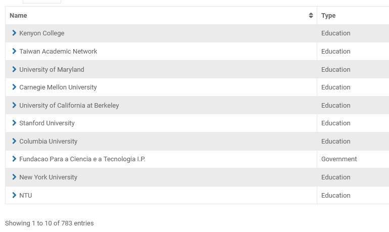
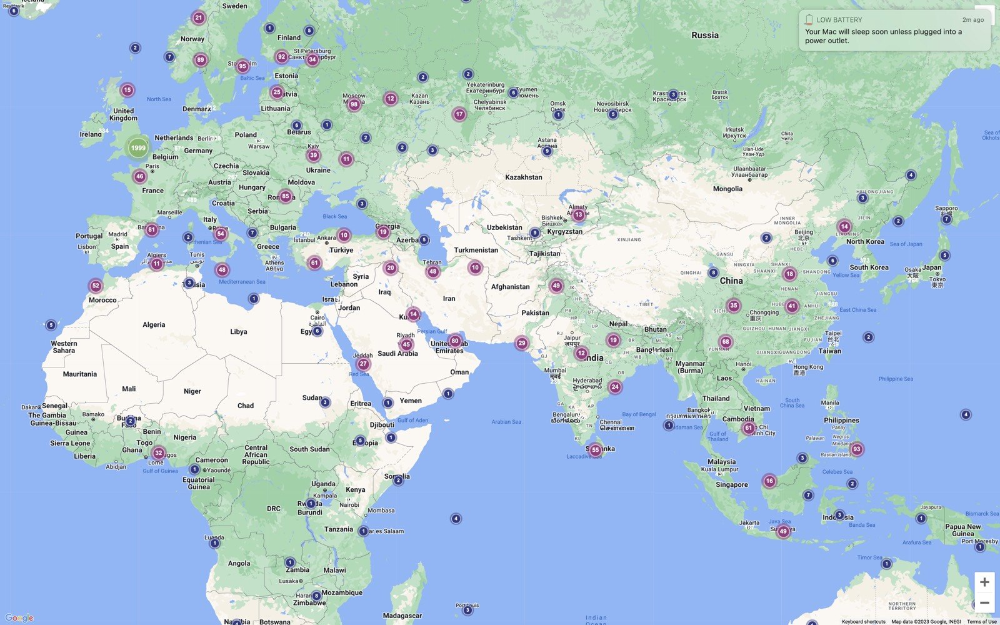
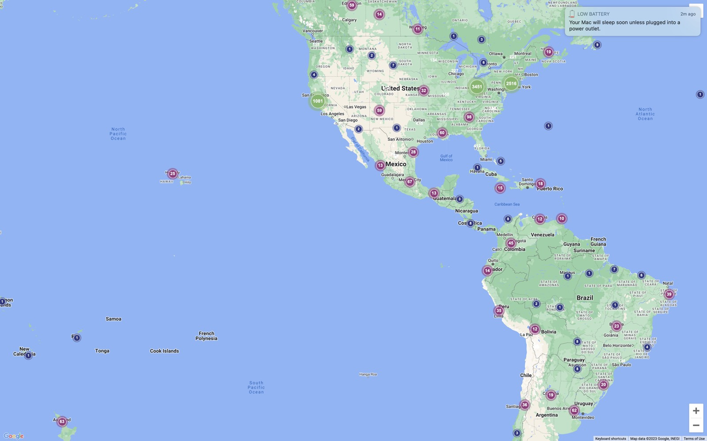

About
Biography
I am a research scientist and AI leader specializing in interdisciplinary machine learning and AI applications across high-impact domains. Over the past decade I have mentored more than 300 original AI and machine learning projects spanning nearly every academic discipline, from narrative and medicine to security and political science, with work downloaded more than 130,000 times by institutions including Stanford, MIT, Berkeley, Oxford, Amazon and the Chinese Academy of Social Sciences.
I currently serve as co-PI for the Modern Language Association team, representing 25,000 members, in the NIST AI consortium, working on red team and blue team testing of large language models. I am also co-PI and chief AI architect for one of 23 teams worldwide awarded a Schmidt Sciences Humanities and AI Virtual Institute grant. Our interdisciplinary team from Columbia University, Berklee College of Music and Louisiana State University is building a multilingual and multimodal archival digitization, restoration and integrated graph database system for early 1900s New Orleans jazz collections. Previously I led research into tabular LLM recidivism prediction benchmarking for Notre Dame's Tech Ethics Lab on an IBM grant, using multi-agent debate simulations of US bench trials. Several papers are under review at top-tier 2026 venues including ICML, FAccT, the Journal of Cyber Policy and JAIR. My research focuses on AI safety and security, AI auditing and benchmarking, machine psychology and theory of mind, affective AI, multi-agent workflow automation, and international AI policy and regulation.
Technical expertise spans LLM development and auditing, multimodal AI, automated agent frameworks, game theory simulations, and applying state-of-the-art research to real-world problems in finance, healthcare, law and narrative. I build AI systems for contexts where context, users, adversaries and expert judgment matter as much as raw model capability, which means real-world user testing, failure condition analysis, domain expertise embedded in the architecture rather than bolted on as external review, visible uncertainty instead of fluent but decontextualized answers, and evaluation designed in from the start. I co-founded the world's first human-centered AI program bridging academia, research and industry best practices.
My background includes Fortune 500 director roles, co-founding and leading a Silicon Valley startup as CEO, and international experience across the United States, Japan and Latin America. I hold two US patents on network security, and my published research spans gene therapy to AI policy.
Education and languages
- M.S., Electrical and Computer Engineering, The University of Texas at Austin
- B.S., Electrical Engineering and Computer Sciences, University of California, Berkeley
Languages: English (native), Spanish (US Foreign Service Exam certified), Japanese (JLPT certified), French (professional working proficiency).
Career summary
| Role | Organization | Location |
|---|---|---|
| Co-PI and Instructor | Kenyon College | Gambier, OH |
| AI Expert and Industry Analyst | BWG Strategy | New York, NY |
| Entrepreneur in Residence | UC Berkeley College of Engineering | Berkeley, CA |
| Director, Development | Symantec Corporation | Redwood City, CA |
| President and CEO | SafeWeb, Inc. | Emeryville, CA |
| CTO | Latin eVentures | Irvine, CA and Sao Paulo |
| Director of IT | Matrix Absence Management (NYSE: DFG) | San Jose, CA |
| Web and Database Consultant | Adecco, Stanford University | Palo Alto, CA |
| AMA Research Fellow | University of Iowa Hospitals and Clinics | Iowa City, IA |
| Japanese Localization Engineer | Dell (NYSE: DELL) | Austin, TX |
| Japanese Technical Analyst | SEMATECH | Austin, TX |
| Programmer Analyst | MMS International and McGraw-Hill | Tokyo, Japan |
| Research Programmer | Lawrence Berkeley Labs | Berkeley, CA |
| Sales Engineer | Computer Associates (NYSE: CA) | Los Angeles, CA |
Key highlights
-
SafeWeb, co-founder and CEO
Built the world's largest online privacy service, handling two billion transactions in eight months. Secured 11 million dollars from Wall Street funds plus the first security investment ever made by In-Q-Tel, the CIA-affiliated non-profit. Pivoted to enterprise SSL VPN and drove a 26 million dollar acquisition by Symantec at 35 times revenue. (Product archive)
-
Symantec, Director of Development
Launched the Clientless VPN Gateway in a single quarter, under budget, with two thirds of the planned team. A 400,000 line release shipped with zero attrition through the acquisition integration.
-
Matrix Absence Management, Director of IT
Architected business-to-business systems for more than 200 high-technology clients including Intel, Dell and Cisco. Led a 25 million dollar Unisys due diligence.
-
Latin eVentures, CTO
Delivered a multi-million dollar business-to-business portal and ERP system across Latin America in three languages, and saved 500,000 dollars in vendor renegotiations.
Patents
- Chun, Jon A., Stephen Dao Hui Hsu and James Noshir Hormuzdiar; Symantec Corporation. "Intelligent Secure Data Manipulation Apparatus and Method." US Patent 7,730,528 B2. (Patent documents)
- Stephen Dao Hui Hsu, James Noshir Hormuzdiar and Jon A. Chun; Symantec Corporation. "Method and Apparatus for Encrypted Communications to a Secure Server." US Patent 8,065,520.
Honors
- Tau Beta Pi, engineering honor society, UC Berkeley
- Eta Kappa Nu, electrical and computer engineering honor society, UC Berkeley
- American Heart Association Research Fellow, University of Iowa College of Medicine, with two PubMed-indexed publications
Organizations
US NIST AI Safety Institute Consortium
Lead AI Safety Researcher, 2024 to present, for the Modern Language Association and its 25,000 members worldwide.
From the MLA announcement: the MLA is joining more than 200 of the nation's leading AI stakeholders in a US Department of Commerce initiative for trustworthy and safe AI. The MLA-sponsored team, led by Katherine Elkins and Jon Chun at Kenyon College, evaluates model capabilities with a special focus on linguistic edge cases and ethical frameworks.
Human Centered AI Lab
Founder, January 2024 to present.
A volunteer, wholly virtual non-profit that facilitates interdisciplinary AI collaboration between researchers and domain experts on safety, bias, explainability, ethics and policy.
The Helix Center, New York
Executive Board Member, November 2022 to present.
Interdisciplinary roundtables drawing together leaders from the arts, humanities, sciences and technology, including Living in Difficult Times in November 2022.
Kenyon AI CoLab
- Interdisciplinary AI and machine learning projects
- Kenyon Digital CoLab
- Kenyon Interdisciplinary Human-Centered AI Program



Collaborations
Government and policy
- US White House AI safety policy and the NIST AI Safety Institute, with NIST and the MLA
- Comparative global AI regulation, with SSRN, arXiv and the Journal of Cyber Policy
Industry and research
- Meta Global Scholars Research Group
- AI Alliance Essential AI Competencies Guide, with Meta, IBM, Intel and the US Chamber of Commerce
- BWG Strategy, technology strategy and AI investing, New York
- IBM and Notre Dame Tech Ethics Lab
Academic
- Collaborative AI safety and open-source policy, with Oxford, Berkeley, the University of Virginia, and Berklee and MIT
- AI and the future of higher education, with Notre Dame, Carnegie Mellon, UC Berkeley and Harvard Business School
- Computational law, ethics and explainable AI, with the ACM, Northwestern Law, IBM and Notre Dame
- Multimodal affective AI, with Meta, the NEH and EMNLP/CoNLL
- Narrative and affective AI, with Yale, Harvard and the Narrative conferences
- NLP and AI research, with ICML, ACL, the ACM, AAAI and FAccT
- Theoretical computer science, with McGill, the University of Pittsburgh and Carnegie Mellon
- Psychology and cognitive science, with Ohio State University
- Literature, language and linguistics, with the MLA and Cambridge University Press
- Theatre and film, with Denison, the NEH and LA Theatre
Other domains
- Medicine and the FDA, with AFDO and RAPS
- Physics and engineering simulations, with NAFEMS
- IoT predictive maintenance, with the Kenyon AI CoLab and Weyerhaeuser Paper
- Computer and network security, with the USPTO and Symantec
- Electronic medical records, with the University of Iowa and the American Medical Informatics Association
- Financial information systems, with Bloomberg and McGraw-Hill Tokyo
- Semiconductor research, with SEMATECH and Lawrence Berkeley Labs
Press
AI and the humanities, 2023 to 2026
-
Where AI Meets the Humanities: Inside Kenyon College's Bold Experiment
Forbes, November 2025 -
AI's potential to help preserve endangered archives
NPR and the Ohio Newsroom, February 2026, syndicated by Library Journal infoDOCKET -
AI safety and the NIST consortium
Christian Science Monitor, February 2026 -
Faculty receive a major award for AI work advancing the humanities
Kenyon College, December 2025, on the Schmidt Sciences HAVI grant -
Debate on AI and art
Al Jazeera, The Stream, 2023 -
Invited speaker, virtual forum
Chronicle of Higher Education, June 2025
SafeWeb and internet privacy
-
CIA web masking technology and the In-Q-Tel license
Wall Street Journal -
US support for evading Chinese internet censorship
New York Times -
Spy Tech
Washington Post feature -
International coverage of the SafeWeb technology
Le Monde -
Analysis in the You've Got Dissent! monograph
RAND Corporation -
Symantec's 26 million dollar SafeWeb acquisition
CRN, Network World and The Register
Writing
Selected essays and public thinking, published on LinkedIn.
| Title | Date | Theme |
|---|---|---|
| "AI Skills Demand vs CS Unemployment" | Feb 26, 2026 | Technical fluency combined with domain knowledge |
| "Coding's Crisis: Why CS Grads Struggle While AI Expertise Creates Opportunities" | Nov 23, 2025 | Programming value shifting toward judgment and domain expertise |
| "AI's Shift from the Narrow Technical to the Universal Human" | Aug 23, 2025 | AI as an institutional challenge beyond engineering teams |
| "The Future of Programming & Human-Centered AI" | Jan 30, 2025 | Programming's future through human-centered collaboration |
| "AI is Not the New Oil and the Unavoidable Geopolitics of Technology" | May 16, 2024 | Infrastructure, talent and regulation over resource metaphors |
| "AI Outgrows the Lab" | Jan 17, 2024 | The transition from demos to organizational deployment |
| "The Future of AI is Wide Open (Source)" | Dec 16, 2023 | Open-source diffusion and governance tensions |
| "A First for Higher Education to Meet the Challenge of AI" | Oct 19, 2023 | Integrating AI study across the liberal arts |
Contact
For research, collaboration, speaking and media inquiries, the best routes are LinkedIn or the Kenyon College directory. Code questions and issues are best raised on GitHub.